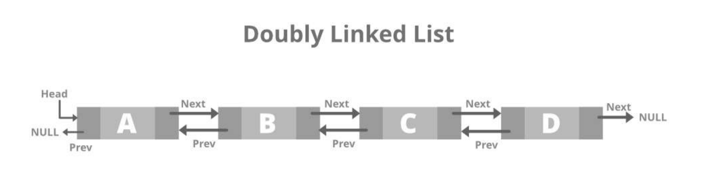

Linked List adalah salah satu bentuk struktur data, berisi kumpulan data (node) yang tersusun secara sekuensial, saling sambung-menyambung, dinamis dan terbatas.
Linked List sering disebut juga Senarai Berantai
Linked List saling terhubung dengan bantuan variabel pointer
Masing-masing data dalam Linked List disebut dengan node (simpul) yang menempati alokasi memori secara dinamis dan biasanya berupa struct yang terdiri dari beberapa field.
Linked List sebenarnya merupakan suatu tipe data tersendiri. Dibahasa Java, Linked Lis tbisa berupa suatu Class ataupun Record.
Statis
Penambahan, pengapusan data terbatas
Random access
Penghapusan Array tidak mungkin
Dinamis
Penambahan pengapusan data tidak terbatas
Sequential access
Penghapusan Linked list mudah
Akan lebih efektif jika kita menggunakan Linked List jika kita memerlukan suatu pengaksesan pada struktur data yang lebih dinamis.Konsep yang lebih cocok menggunakan linked list adalah:Stack,Queue,Tree,dan Graph.
Mengapa? Karena sifat dinamis dari Linked List .Kita tidak perlu untuk mengetahui berapa block memory yang akan kita akses. Jadi, jika kita butuh block baru pada memory,tinggal menyisipkan pada kanan atau kiri list yang telah ada.
Kita dapat memanfaatkan secara efektif konsep array dengan mengenal metode indexing pada array. Array merupakan struktur data statis yang mempunyai index penomoran Alamat variable array yang dimaksud.Jadi, secara umum, kita dapat mengaksesnya dengan lebih cepat.
Konsep–konsep yang dapat memanfaatkan konsep indexing untuk mempercepat pengaksesannya adalah Sorting dan Searching.
Hal ini dikarenakan oleh penomoran Alamat variable pada memory yang telah diketahui terlebih dahulu. Jadi, semisal kita menginginkan mencari variable dengan indeks tengah,kita bisa langsung menujuk ke indeksnya.
Setiap node pada linked list mempunyai field yang berisi pointer ke node berikutnya dan juga memiliki field yang berisi data.Akhir linked list ditandai dengan node terakhir akan menunjuk ke null yang akan digunakan sebagai kondisi berhenti saat pembacaan linked list
Linked list dengan menggunakan pointer,dimana setiap node memiliki 3 field, yaitu:1 field pointer yang menunjuk ke pointer berikutnya, 1 field pointer yang menunjuk ke pointer sebelumnya dan field yang berisi data dari node tersebut.Pointer next dan prev-nya menunjuk ke null.
Single Linked List yang pointer next-nya menunjuk ke dirinya sendiri,jika terdiri dari beberapa node maka pointer terakhirnya akan menunjuk ke pointer terdepannya
Double Linked List yang pointer next dan prev-nya menunjuk ke dirinya sendiri secara circular.
Single : artinya field pointer-nya hanya satu buah saja dan satu arah serta pada akhir node, pointernya menunjuk NULL
Linked List : artinya node-node tersebut saling terhubung satu sama lain
Setiap node pada linked list mempunyai field yang berisi pointer ke node berikutnya, dan juga memiliki field yang berisi data.
Node terakhir akan menunjuk ke NULL yang akan digunakan sebagai kondisi berhenti pada saat pembacaan isi linked list.